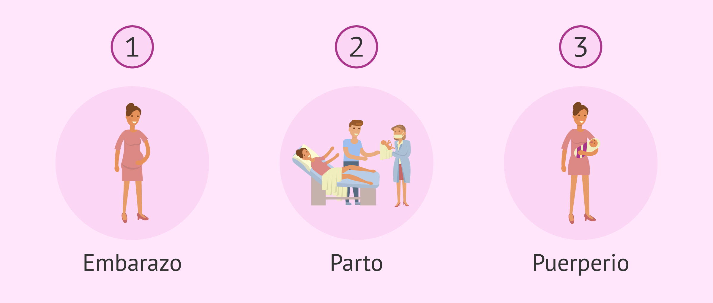

La Salud Materna
Se refiere a la salud de las mujeres durante el embarazo, el parto y el puerperio. Cada una de estas etapas debería ser una experiencia positiva, que asegure el pleno potencial de salud y bienestar tanto para las mujeres como para sus bebés.

¿Por qué es importante?
La salud materna no solo se trata de sobrevivir al embarazo y el parto, sino también de promover la salud y bienestar a largo plazo tanto para las madres como para sus hijos. Así mismo es fundamental que todas las mujeres tengan acceso a una atención de salud materna respetuosa y de alta calidad, superando las desigualdades que influyen en este campo. Además de los siguientes puntos: